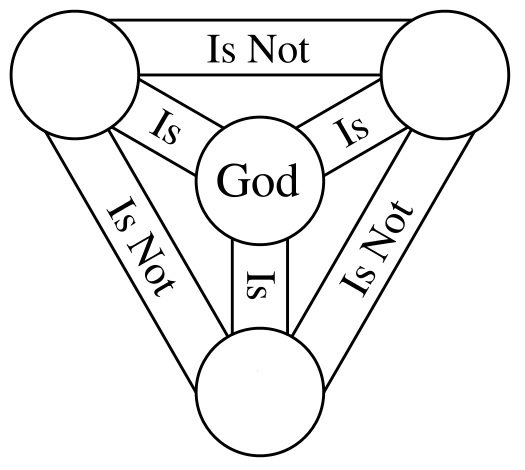

Near sameness is somewhat the same as sameness
Wouter Beek (w.b.j.beek@vu.nl) Joe Raad (joe.raad@agroparistech.fr), Jan Wielemaker, and Frank van Harmelen
June 7th, 2018
Motivation
Linked Data requires a formal understanding of
identity
(i.e. owl:sameAs).
You must have both
Formal meaning
〈x, owl:sameAs, y〉
means that
(∀P)(Px ↔ Py)
Linked Data
“Include links to other URIs, to discover more things.” Linked Data principle 4, TBL
Similarity is not good enough
“SKOS exactMatch indicates a high degree of confidence that two concepts can be used interchangeably across a wide range of information retrieval applications”
SKOS specification, 2009
The only thing worse
than owl:sameAs is
‘clever’ replacements for owl:sameAs
lexvo:nearlySameAs lexvo:somewhatSameAs owl:sameAs
lexvo:nearlySameAs lexvo:nearlySameAs lexvo:somewhatSameAs ?
owl:sameAs lexvo:somewhatSameAs bbc:sameAs ?
(Identity shenanigans is not a new thing)
{kind=link}
We need an
enabler for empirical research into
how owl:sameAs is
actually being used.
The analytic approach: “people make mistakes” / “it's just noise” is not enough.
sameAs.cc requirements
A performant and cost-effective solution for determining whether two things are (claimed to be) the same.
This solution must scale to the LOD Cloud.
This solution must be formally
interpretable
(no skos:exactMatch, rdfs:seeAlso).
It must be calculated incrementally.
Approach
Formal properties of Identity
Identity is the smallest equivalence relation, it is:
- reflexive (x,x)
- symmetric (x,y) → (y,x)
- transitive (x,y) ∧ (y,z) → (x,z)
Example
Explicit identity relation over
{:a,:b,:c,:d}:
:a owl:sameAs :b
:d owl:sameAs :b
Then the implicit identity relation is:
:a owl:sameAs :a
:a owl:sameAs :b
:a owl:sameAs :d
:b owl:sameAs :a
:b owl:sameAs :b
:b owl:sameAs :d
:c owl:sameAs :c
:d owl:sameAs :a
:d owl:sameAs :b
:d owl:sameAs :d
Where do we go for the explicit identity relation?
LOD-a-lot
Fernández et al. 2017
Extract the explicit identity relation
prefix owl: <http://www.w3.org/2002/07/owl#>
construct {
?s owl:sameAs ?o
} where {
{
select distinct ?s ?o {
?s owl:sameAs ?o
filter(?s < ?o)
}
}
}
558.9M → 331M triples
Compaction: 2.8M reflexive and 225M duplicate symmetric triples
Create HDT: 4 hours (1 CPU core); 4.5GB + 2.2GB index
Calculate the implicit identity relation
RDF nodes N
key : ID ↦ Ƥ(N)
val : N ↦ ID
Identity closure for x := key(val(x))
Add explicit identity pair (x,y):
- Both are new: x ↦ id, y ↦ id, id ↦ {x,y}
- Only y is new: y ↦ val(x), val(x) ↦ key(val(x)) ∪ {y}
- Both are old: val(x) ↦ key(val(x)) ∪
key(val(y)),
∀ y'∈key(val(y)) . y' ↦ val(x)
5 hours (2 CPU cores); 9.3GB disk (RocksDB)
Analysis
Analysis: explicit identity relation
Aggregation by namespace
Aggregate 558.9M owl:sameAs statements
into 2,618 namespaces, 10,791 edges, 142
components
Relatively few namespaces have internal links. (Indicator that RDF datasets enforce UNA internally.)
Domain-specific identity hubs:
- Bibliographic datasets:
www.bibsonomy.org - Geographic datasets:
geonames.org - Biochemistry datasets:
bio2rdf.org - Online reviews:
revyu.com
Analysis: implicit identity relation
№ Identity sets in implicit identity relation
5,044,948,869 singleton identity sets
48,999,148 non-singleton identity sets
Non-singleton identity sets
{kind=link}
31,337,556 identity sets (63.96%) have cardinality 2
The largest identity set has cardinality 177,794. It includes Albert Einstein, the countries of the world, and the empty string. Responsible for 31,610,706,436 (90%) of the implicit identity relation.
Kernel calculation
The minimum number of owl:sameAs triples
that would be needed in order to express the full
materialization.
Nice use case: stream through the full identity closure.
Processing time: 55.6 seconds (3 CPU cores)
Kernel size: 130,673,158 triples
0.37% of the implicit identity relation
23.4% of the explicit identity relation
Use cases / Why are we doing this?
owl:sameAs triples about ‘Barack Obama’
{kind=link}
But are they really the same thing?
http://als.dbpedia.org/resource/Barack_Obama
http://am.dbpedia.org/resource/ባራክ_ኦባማ
http://data.nytimes.com/obama_barack_per
http://viaf.org/viaf/52010985
http://yago-knowledge.org/resource/Barack_Obama
http://rdf.freebase.com/ns/m.02mjmr
http://dbpedia.org/resource/Administration_of_Barack_Obama
http://dbpedia.org/resource/Barack_Obama_Cabinet
http://dbpedia.org/resource/Barack_Obama_presidency
http://yago-knowledge.org/resource/Presidency_of_Barack_Obama
http://rdf.freebase.com/ns/m.05b6w1g
‘Barack Obama’ after community detection
{kind=link}
purple: person
green: president
blue: senator
orange: government
Future work
- Close IRIs under syntactic equivalence?
- Close IRIs under protocol equivalence?
http://dbpedia.org/resource/Cretehttps://dbpedia.org/resource/Crete
- New LOD Laundromat scrape + LOD-a-lot file
- Empirical Semantics: study how meaning is used (example).
Thank you!
Try it yourself: https://sameAs.cc
Wouter Beek (w.b.j.beek@vu.nl) Joe Raad (joe.raad@agroparistech.fr), Jan Wielemaker, and Frank van Harmelen
June 7th, 2018